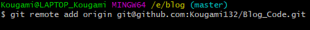
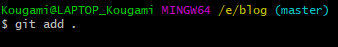

使用git把本地项目提交到github、拉取项目、更新github项目
1. 安装git
2. 本地git连接github账号
3. 创建github仓库
创建仓库并复制仓库地址

4. 本地项目初始化并连接仓库
打开项目文件右键选择 Git Bash Here
初始化git，把这个文件夹变成Git可管理的仓库
1 | git init |
把本地项目的origin分支与github仓库进行关联
1 | git remote add origin {复制过来的仓库地址} |

5. 把项目上传到github
查看文件状态
1 | git status |
把工作区的文件添加到暂存区
1 | git add . #.代表所有更改过的文件 |

把暂存区的文件提交到本地仓库
1 | git commit -m 'first commit' #''里写注释 |

把本地仓库的origin分支文件push到github仓库的master分支
1 | git push -u origin master #第一次提交由于远程仓库为空所以带-u，以后就不带 |
提交完成
6. 拉取项目到本地
在要拉取项目的文件夹右键选择 Git Bash Here

拉取项目
1 | git clone {项目仓库地址} |
7. 更新项目
检查文件并添加到暂存区
1 | git status |
1 | git add . |
更新项目到github
1 | git commit -m 'update' |
本博客所有文章除特别声明外，均采用 CC BY-SA 4.0 协议 ，转载请注明出处！